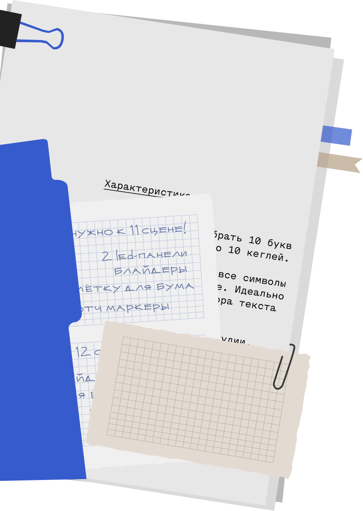
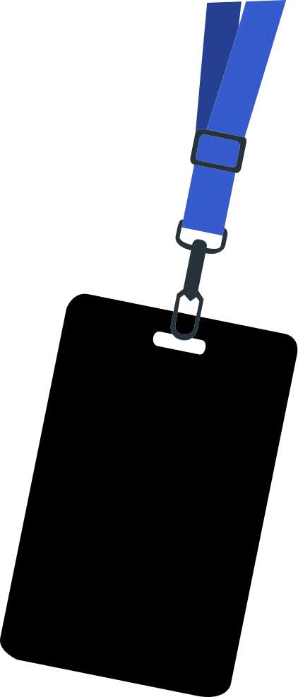
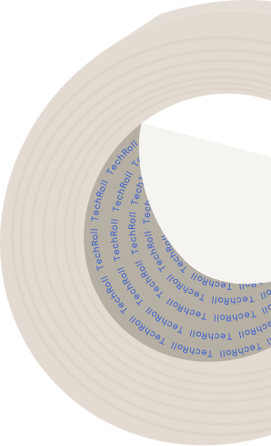

История создания
Шрифт Menoe Grotesque вдохновлён старой печатной
машинкой.
Адам Кати проанализировал шрифт с засечками
в этой машине и
создал свою версию без засечек,
сохранив традиции пишущих
машинок.
Начертания
(2 штуки)
Regular
Italic
ULITRA MARKER
blue

Адам Кати
Режиссёр
Turbosky